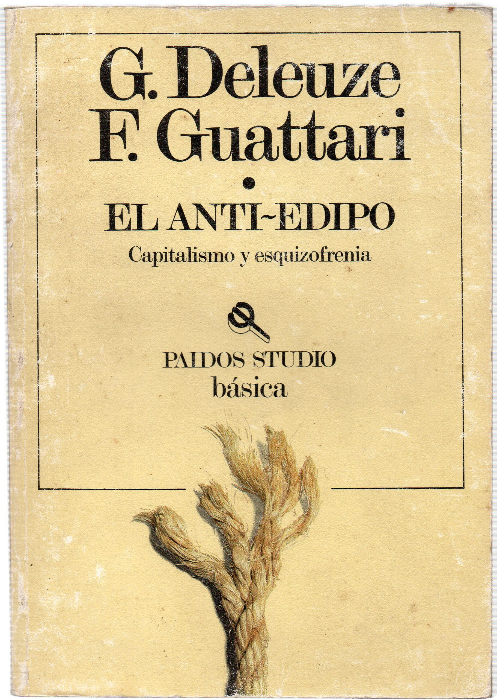

Gilles Deleuze (pronunciación en francés:/ʒil də'lø:z/; París, 18 de enero de 1925-ib., 4 de noviembre de 1995) fue un filósofo francés, considerado entre los más importantes e influyentes del Siglo XX. Desde 1953 hasta su muerte, escribió numerosas obras filosóficas sobre la historia de la filosofía, la política, la literatura, el cine y la pintura. También fue un reconocido profesor de filosofía hasta su jubilación en 1988.
Primeramente percibido como un historiador de la filosofía, a causa de haber escrito obras sobre filósofos tan diversos como David Hume, Friedrich Nietzsche, Emmanuel Kant, Baruch Spinoza o Henri Bergson, Deleuze fue evolucionando hacia una nueva definición del filósofo como "el creador de conceptos” en la sociedad; un creador de nuevas palabras en filosofía, con diferentes significados. Sin embargo, regresó a la historia de la filosofía al final de su carrera universitaria, dedicando obras a Michel Foucault, François Châtelet y Gottfried Wilhelm Leibniz.
Su tesis filosófica se centra en los conceptos de “diferencia” y “repetición”, es decir, la relación de lo mismo con lo semejante, de la copia con el doble, y del efecto de la repetición con el infinito en comparación con un original. Toma como referencia a
Gottfried Wilhelm Leibniz, quien fue tanto metafísico como matemático. Así, Deleuze intenta desarrollar una metafísica, de acuerdo con la física y las matemáticas de su tiempo (los años sesenta), en la que los conceptos de multiplicidad, suceso y virtualidad reemplazan respectivamente a los de sustancia, esencia y posibilidad.
Deleuze se enfoca posteriormente en las relaciones entre significado, sinsentido y acontecimiento, tomando como referencia el trabajo de Lewis Carroll, el del filósofo Whitehead y el estoicismo griego. Finalmente, desarrolló una metafísica y una filosofía del arte, interesándose tanto por el cine como por el pintor Francis Bacon.
Entre sus libros más famosos están las monografías sobre
David HumeEmpirismo y subjetividad (1953), La filosofía crítica de Kant (1963), El Bergsonismo (1966), Presentación de Sacher-Masoch (1967), Proust y los signos, Spinoza y el problema de la expresión (1968), dos volúmenes de Capitalismo y esquizofrenia: Mil mesetas y El Anti edipo, ambos escritos junto con Félix Guattari; los dos libros que siguieron al mayo del 68 en París, Diferencia y repetición (1968) y Lógica del sentido (1969); sus dos libros sobre cine, Imagen movimiento (1984) e Imagen tiempo (1985); Spinoza: Filosofía práctica (1981), En medio de Spinoza (Clases dictadas en la Universidad de Vincennes entre noviembre de 1980 y marzo de 1981), Foucault (1986) y, por último, ¿Qué es la filosofía? (1991), junto con Guattari.
En 1994, Deleuze recibió el Gran Premio de Filosofía de la Académie Française por su obra.
18 de enero de 1925, XVII Distrito de París (Francia) o París (Francia)
Fallecimiento
4 de noviembre de 1995, (70 años). XVII Distrito de París (Francia) o París (Francia).
Causa de muerte
Caída
Sepultura
Saint-Léonard-de-Noblat
Nacionalidad
Francesa
Religión
Ateísmo
Lengua materna
Francés
Familia
Cónyugue
Denise Paul Granjouan
Hijos
2
Educación
Educación
Doctorado
Educado en
Universidad de París
Lycée Carnot
Lycée Henri IV
Alumno de
Jean Hyppolite
Georges Canguilhem
Información profesional
Ocupación
Filósofo, historiador, escritor, profesor universitario, historiador de la filosofía y teórico del arte
Empleador
Liceo Louis-le-Grand
Universidad de París
Centro Nacional para la Investigación Científica (1960-1964)
University of Lyon (1964-1969)
Universidad de París 8 (1969-1987)
Movimientos
Materialismo, Posestructuralismo, metafísica, filosofía occidental y filosofía continental
Instrumento
Sierra musical
Obras notables
Diferencia y repetición Lógica del sentido El anti edipo
Gilles Deleuze nació en 1925, en París, en el seno de una familia burguesa. Su padre, Louis, era ingeniero y su madre Oddet Camaüer se ocupaba de la casa y de sus hijos, Gilles y George (3 años mayor que Deleuze). Sus padres estaban adscritos a la derecha, siendo próximos a la organización Croix-de-Feu. Deleuze relata en L'Abécédaire el terror de sus padres, en el verano de 1939, cuando la playa de Deauville es “invadida” por proletarios que han llegado gracias a las vacaciones pagadas. Desde pequeño, Deleuze, padeció de problemas respiratorios.
En 1940, la Segunda Guerra Mundial sorprendió a su familia mientras estaban de vacaciones en Deauville. Sus padres decidieron dejar a Gilles en este pueblo, en un internado. Si bien fue, hasta entonces, un estudiante mediocre, descubre la literatura gracias a su maestro Pierre Halbwachs, hijo del sociólogo Maurice Halbwachs. Fue este maestro el que le hizo leer a André Gide, Charles Baudelaire e incluso a Anatole France.
Con el armisticio firmado, Gilles regresó a París. En 1941, completó sus estudios de secundaria en el Lycée Carnot, y frecuentaba a Michel Tournier, alumno del Lycée Pasteur en Neuilly. En Carnot, Deleuze era entonces compañero de clase de Guy Môquet y enseñado por Pierre Vial, mientras que Maurice Merleau-Ponty enseñó en la otra khâgne (clase preparatoria de Letters Supérieures). Durante estos años de guerra, conoció, a través de Michel Tournier, a Maurice de Gandillac y Marie-Madeleine Davy. Este último le presentó a Georges Bataille, Pierre Klossowski, Jean Grenier, Brice Parain, Michel Butor, Jean Paulhan, Roger Caillois y Jean-Paul Sartre, durante unas reuniones privadas del último sábado de cada mes. Michel Tournier lleva a Deleuze a cursos públicos para psiquiatras, de Théophile Alajouanine y Jean Delay, en el hospital Salpêtrière.
Durante estos años de Ocupación, estuvo muy marcado por la lectura de Jean-Paul Sartre. El ser y la nada le fascinaba y llegó a ver a Les Mouches en el teatro Sarah Bernhardt. En 1944, Gilles Deleuze publicó un pastiche de Jean-Paul Sartre titulado Description de la femme: pour une philosophie d'autrui sexuée (Descripción de la mujer: para una filosofía de los otros sexuados).
El 2 de julio de 1944, su hermano mayor, Georges, fue arrestado por resistencia y murió durante su traslado al campo de concentración de Buchenwald. Esta muerte afectó fuertemente a Gilles y sus padres. Estos últimos consagran, según Michel Tournier “un verdadero culto al niño muerto” mientras que Gilles se reduce a ser "el hermano del héroe", percibido como mediocre.
Después de 1945, se incorporó al hypokhâgne (clases preparatorias literarias) y luego al Lycée Louis-le-Grand. Sus profesores son Ferdinand Alquié, Georges Canguilhem, Maurice de Gandillac y Jean Hyppolite. Además, en el Lycée Henri IV siguió las lecciones de Jean Beaufret, el “introductor” de Martin Heidegger en Francia. A pesar de sus habilidades, consideradas excepcionales por sus maestros, quienes le hablaban de igual a igual, no pasó el examen de ingreso a la Escuela Normal Superior de París (École Normale Supérieure), pero, en vista de sus excelentes resultados, obtuvo una beca de estudios para prepararse la admisión, que prepara en Sorbonne Université, donde Canguilhem y Gandillac volvieron a ser sus maestros, así como Gaston Bachelard y Jean Wahl. En la Universidad entabló una gran amistad con Claude Lanzmann.
Su primera decepción le vino de Sartre con motivo de su conferencia "El existencialismo es un humanismo" pronunciada el 29 de octubre de 1945. Michel Tournier, con quien Deleuze había ido a escuchar la conferencia, escribe sobre este tema:
« Estábamos devastados. Entonces nuestro maestro recogió de la basura, donde habíamos enterrado esta idiotez deformada, apestando a sudor y vida interior, el humanismo »
Michel Tournier
En 1946, Deleuze participó en la revista Espace, bajo la égida Alain Clément, que tuvo un solo número y para la que escribió el artículo “De Cristo a la burguesía”.
En 1947, se preparó para la admisión junto a François Châtelet. Materia y memoria de Henri Bergson estuvo en el programa, un libro que dejó una huella duradera en su pensamiento y le hizo considerar a Bergson como un filósofo destacado, mientras que sus amigos, de tendencia marxista, como François Châtelet, veían a Bergson como un "espiritualista polvoriento".
Deleuze tuvo que faltar a varios cursos durante el año por sus problemas respiratorios y temía a los exámenes orales, los cuales le hicieron suspender la ENS; es François Châtelet quien le obligó a acudir a estas pruebas. Esta admisión le otorgó una autonomía económica que le permitió dejar a su madre e independizarse, justo después del fallecimiento de su padre.
Profesor de Filosofía
Tras ser admitido como profesor en 1948, pasó un año en Alemania para estudiar en la Universidad de Tübingen. A su regreso, se trasladó al Hôtel de la Paix, en la Île Saint-Louis de París, en una habitación cercana a la de Michel Tournier. Entre semana impartía clase en el Lycée Louis-Thuillier d'Amiens, hasta 1952. Después, la impartió en el Lycée Pothier d'Orléans, de 1952 a 1955, y en el Lycée Louis-le-Grand, de 1955 a 1957, unos institutos de educación secundaria donde este era muy apreciado.
En 1956 contrajo matrimonio con Denise Paul "Fanny" Grandjouan, traductora de las obras de D.H. Lawrence (que luego trabajó para el modista Pierre Balmain) con quien se trasladó a París. Si bien había publicado Empirismo y subjetividad en 1953 (dedicado a la filosofía de David Hume), durante los años siguientes se centró por completo en la docencia, dejando de publicar hasta el año 1962.
Obtuvo un puesto de ayudante en la Facultad de Letras de la Universidad de París en 1957 y luego se dedicó a la historia de la filosofía. En 1960, fue nombrado investigador asociado del CNRS en Lyon; aquí es donde se hizo amigo de Michel Foucault.
En mayo de 1960, nació su primer hijo, Julien.
En 1962, Michel Foucault, quien entonces enseñaba en la Universidad de Clermont-Ferrand, le propuso suceder a Jules Vuillemin, quien acababa de ser elegido para el Collège de France; pero Roger Garaudy, quien entonces contaba con los favores del ministerio, fue finalmente nombrado como su sucesor. En 1964, fue designado como profesor de la Facultad de Letras de la Universidad de Lyon, donde impartió cursos de Moral y Sociología y Filosofía General. Sus compañeros fueron, entre otros, Henri Maldiney, François Dagognet, Geneviève Rodis-Lewis y Pierre Fedida.
Ese mismo año, 1964, nació su primera hija, Émilie.
Reanudó la publicación de su trabajo en 1962, publicando nueve libros en los siguientes nueve años. Se trató en su mayoría de libros dedicados a otros filósofos: Nietzsche y la filosofía (1962), Filosofía crítica de Kant (1963), Nietzsche (1965), Bergsonismo (1966), Spinoza y el problema de la expresión (1968). Esta fue la razón de que en un principio se le considerase el historiador de la filosofía que después negó haber sido. También dedicó dos libros a escritores: Proust y los signos (1964) y Presentación de Sacher-Masoch (1967). A finales de la década de 1960, desarrolló una filosofía más personal, en Diferencia y repetición (1968) y Lógica del sentido (1969). En 1969, la Universidad de París le otorgó el doctorado ès lettres por su tesis principal Diferencia y repetición, bajo la dirección de Maurice de Gandillac, y su tesis secundaria Spinoza y el problema de la expresión, bajo la dirección de Ferdinand Alquié.
La década política
En mayo de 1968, los movimientos de mayo, iniciados en París, provocaron una importante respuesta en Lyon: los estudiantes se declararon en huelga, bloquearon las oposiciones, ocuparon las instalaciones día y noche. Gilles Deleuze apoyaba activamente el movimiento, cosa que lo distingue de la mayoría de los demás profesores. Unos meses más tarde, fue invitado por Michel Foucault para convertirse en profesor y para dar conferencias en la recién creada Universidad Paris-VIII.
A principios de 1969 tuvo que someterse a una toracoplastia, lo que le privó del uso de uno de sus pulmones. Estuvo en recuperación en Limousin con su esposa; fue allí donde conoció a Félix Guattari. Su encuentro con él. fue tan decisivo como el de Simondon; juntos iniciaron una larga y fructífera colaboración. Juntos escribieron El anti edipo (1972), Kafka. Por una literatura menor (1975) y luego Mil mesetas (1980), tres obras que destacan por la novedad de su estilo y contenido. Atacan conjuntamente el psicoanálisis y el capitalismo, y desarrollan una metafísica, además de una teoría política.
Fue durante esta década que Deleuze también se involucró, junto a Michel Foucault, en el GIP (Grupo de Información sobre Prisiones), un grupo derivado directamente de la corriente maoísta y del deseo de proteger a los militantes de la Gauche prolétarienne (Izquierda Proletaria).
Multiplica los discursos del conflicto israelí-palestino, por los que se deja llevar el sistema judicial europeo, y apoya a activistas de extrema izquierda como Toni Negri y las Brigadas Rojas. También propone nuevas formas de organización política, sintetizadas en los conceptos de red (cuyo modelo imaginado es el rizoma) y de microresistencia.

Portada del libro El Anti Edipo
Nuevos intereses y jubilación
Mil mesetas es para Deleuze y Guattari la culminación de su colaboración. Después de 1980, Deleuze volvió a escribir obras sobre otros filósofos: Spinoza. Filosofía práctica (1981), Foucault (1986) y Périclès y Verdi : La filosofía de François Châtelet (1988); los dos últimos están dedicados a dos de sus amigos que murieron poco antes. También escribió un libro sobre el pintor Francis Bacon, Logique de la sensation (1981) y dos libros sobre cine, L'Image-mouvement (La imagen movimiento) (1983) y L'Image-temps (La imagen tiempo)(1985).
En 1987 crea con Guattari la “Revisión del esquizoanálisis".
En Le Pli, Leibniz et le baroque (1988), Gilles Deleuze retoma su reflexión sobre Leibniz y su metafísica a través de la metáfora topológica del pliegue, a través del historiador y filósofo de la ciencia Michel Serres:
"Nadie mejor que Michel Serres ha identificado las consecuencias pero también los presupuestos de la nueva teoría de las cónicas ... el nuevo modelo óptico de percepción y de geometría en la percepción que repudia las nociones de tacto, contacto y figura a favor de una “arquitectura de la visión”
Gilles Deleuze, Le Pli, Leibnitz et le baroque, Paris, Éditions de Minuit, 1988, p. 29-30.
Deleuze aborda así la cuestión estética del barroco, como estilo, ya sea pasado o contemporáneo, a través de su lectura de Leibniz y Spinoza, el análisis de Eugenio d'Ors y finalmente desarrollando su reflexión estética con la obra contemporánea de Simón Hantaï, Pierre Boulez, Bernard Cache o la de Carl André.
Últimos años y muerte
En 1988, aceptó participar en una larga entrevista televisada con su exalumna, Claire Parnet, con la condición de que esta película no se proyectara hasta después de su muerte: L'Abécédaire de Gilles Deleuze, dirigida por Pierre-André Boutang.
En ¿Qué es la filosofía? (1991), intenta explicar la filosofía como una actitud en la vida, en lugar de una doxa ontológica que otorga la verdad definitiva de las cosas. La filosofía es cuestionamiento, un cuestionamiento abierto sobre la realidad y no una verdad impuesta o trascendente. Los conceptos que desarrolla el filósofo son herramientas al alcance de todos para tratar de comprender el mundo. Su enfermedad respiratoria se volvió demasiado difícil de soportar, incitando a que Gilles Deleuze acabase con su vida por defenestración el 4 de noviembre de 1995.
"Son [los] organismos los que mueren, no la vida"
Gilles Deleuze
Está enterrado en Saint-Léonard-de-Noblat, en Haute-Vienne.
La obra de Deleuze puede dividirse en dos. Por una parte, después de finalizar sus estudios en 1948, se consagró a realizar monografías sobre filósofos (Bergson, Foucault, Hume, Kant, Leibniz, Nietzsche, Spinoza) y artistas (Bacon, Jarry, Kafka, Proust, Sacher-Masoch), las cuales, pese a su eminente valor didáctico, contienen las primeras instancias de consolidación de su propio pensamiento intelectual. Esto se configura plenamente con la publicación de Diferencia y repetición (1968) y Lógica del sentido (1969).
Por otra parte, escribió tomos filosóficos eclécticos alrededor de un concepto (diferencia, por ejemplo, sentido, esquizofrenia, cine, filosofía). No obstante, con independencia del tema, Deleuze consistentemente desarrolló variaciones sobre ideas semejantes.
Metafísica
En sus primeros trabajos, esto es, antes de sus colaboraciones con Guattari, su principal proyecto filosófico puede condensarse en la inversión sistemática de la relación tradicional entre identidad y diferencia en metafísica. Tradicionalmente, la diferencia se deriva de la identidad. Por ejemplo, para decir «X es diferente de Y» se asume alguna identidad mínima estable tanto para X como para Y. Deleuze arguye, por el contrario, que toda identidad es resultado de la diferencia. Las identidades no son anteriores a la diferencia lógica o metafísica. Esto es, no solo ocurre que nunca dos cosas son la misma, sino que las categorías utilizadas para identificar individuos se derivan, en primer lugar, de las diferencias. Identidades aparentes tales como X se componen de un sinfín de series de diferencias donde X=la diferencia entre x¹ y x²; x¹=la diferencia entre..., y así sucesivamente.
Junto con Kant y Bergson, Deleuze considera que las nociones comunes de tiempo y espacio son formas unificantes impuestas por el sujeto. Concluye que la diferencia pura es no-espacio-temporal; se trata de una idea, que llamará «lo virtual», haciendo referencia a la definición de Proust sobre aquello que es constante tanto en el pasado como en el presente. Aunque las ideas virtuales de Deleuze parezcan semejantes a las formas platónicas o a las ideas de razón pura en Kant, no se trata de originales o de modelos, ni trascienden la experiencia. Por el contrario, se trata de condiciones de una experiencia particular, de su diferencia interna en sí misma. La diferencia en Deleuze es un sistema de relaciones diferenciales que crea espacios, tiempos y sensaciones particulares. Su pensamiento se enmarca, pues, en una línea pluralista (o, según él, empirista); llegará a decir: «el pluralismo es el modo de pensar propiamente filosófico, inventado por la filosofía».
Refiriéndose a Kant y a Schelling, Deleuze habla de un empirismo trascendental. Para Kant, en el idealismo trascendental la experiencia solo adquiere sentido cuando se ordena mediante formas de sensibilidad (tiempo y espacio) y categorías del intelecto (como causalidad). Según Kant, al asumir el contenido de estas formas y categorías como cualidades del mundo en tanto que existe independientemente de nuestro acceso perceptual, genera especialmente creencias metafísicas seductoras pero sin sentido.
Deleuze invierte el planteamiento kantiano afirmando que la experiencia sobrepasa nuestros conceptos al introducir las novedades, y esta experiencia pura de la diferencia actualiza una idea, irrestricta por nuestras categorías previas y forzándonos a inventar nuevas maneras de pensar. Podríamos decir que es empirista posmoderno, asumiendo las formas de espacio y tiempo, pero estas categorías suprasensibles no determinan la trascendencia en la comunicación incorporando nuevas formas inusuales dinámicas que están fuera de nuestra percepción.
Sociedades de control y sociedades disciplinarias
Las viejas sociedades de soberanía manejaban máquinas simples; pero las sociedades disciplinarias se equipan con máquinas energéticas. Las sociedades de control operan sobre máquinas de tercer tipo, máquinas informáticas. Es una evolución tecnológica, una mutación del capitalismo bien conocida que puede resumirse así: en la situación actual, el capitalismo ya no se basa en la producción, que relega con frecuencia a la periferia del tercer mundo. Es un capitalismo de superproducción. Ya no compra materias primas y vende productos terminados: compra productos terminados o monta piezas. Lo que quiere vender son servicios y lo que se quiere comprar son acciones.
Es sencillo buscar correspondencias entre tipos de sociedad y tipos de máquinas, no porque las máquinas sean determinantes, sino porque expresan las formaciones sociales que las han originado y que las utilizan. Las antiguas sociedades de soberanía operaban con máquinas simples, palancas, poleas, relojes; las sociedades disciplinarias posteriores se equiparon con máquinas energéticas, con el riesgo pasivo de la entropía y el riesgo activo del sabotaje; las sociedades de control actúan mediante máquinas de un tercer tipo, máquinas informáticas y ordenadores cuyo riesgo pasivo son las interferencias y cuyo riesgo activo son la piratería y la inoculación de virus. No es solamente una evolución tecnológica, es una profunda mutación del capitalismo.
Gilles Deleuze. Post-scriptum sobre las sociedades del control
Críticas
Gilles Deleuze (junto a Félix Guattari) es uno de los autores más criticados por la obra de Alan Sokal y Bricmont, Imposturas intelectuales por, según sugieren los autores, escribir pasajes sin sentido, abusando de conceptos científicos de forma equivocada y mezclándolos con lenguaje pseudocientífico. Cabe destacar que estas opiniones de Sokal y Bricmont han sido criticadas por otros intelectuales, como el filósofo francés Jacques Derrida y el sociolingüísta Baudouin Jordant, al considerarlas tendenciosas o insuficientemente formadas respecto de los temas que estaban criticando (véase escándalo Sokal).
Su único papel en el cine lo hizo en la película de Michèle Rosier: George qui ? (1973), interpretando al filósofo, teólogo y escritor político Hugues-Félicité Robert de Lamennais.
1968. Différence et Répétition. París: Presses Universitaires de France [Trad. esp.: Cardín, A., trad. Diferencia y repetición. Madrid: Ediciones Júcar Universidad, 1988].
«The Intellectuals and Power: A Discussion Between Gilles Deleuze and Michel Foucault». TELOS 16 (verano de 1973). New York: Telos Press (Reprinted in L'île déserte et autres textes / Desert Islands and Other Texts).
Borgui, S. (2014). La casa y el cosmos. El ritornelo y la música en el pensamiento de Deleuze y Guattari. Buenos Aires: Cactus.
Burns, L. (2012). Contemporary Caribbean Writing and Deleuze. Literature Between Postcolonialism and Post-Continental Philosophy. London & New York: Continuum.
Burns, L., & Kaiser, B. M. (Eds.). (2012). Postcolonial Literatures and Deleuze. Colonial Pasts, Differential Futures. Hampshire & New York: Palgrave Macmillan.
Choat, S. (2010). Marx Through Post-Structuralism. Lyotard, Derrida, Foucault, Deleuze. London & New York: Continuum.
Cremin, C. (2016). Exploring videogames with Deleuze and Guattari. Towards an affective theory of form. London & New York: Routledge.
Dosse, F. (2010). Gilles Deleuze & Félix Guattati. Intersecting Lives. New York: Columbia University Press.
Ferreyra, J. (Ed.). (2016). Intensidades deleuzianas: Deleuze y las fuentes de su filosofía III. Adrogué: Ediciones La Cebra.
Ferreyra, J., & Soich, M. (Edits.). (2014). Deleuze y las fuentes de su filosofía. Buenos Aires: La almohada. https://www.researchgate.net/profile/Matias-Soich/publication/343750094_Ferreyra_J_y_Soich_M_eds_-_Deleuze_y_las_fuentes_de_su_filosofia/links/5f3da1b6a6fdcccc43d61a58/Ferreyra-J-y-Soich-M-eds-Deleuze-y-las-fuentes-de-su-filosofia.pdf?_sg%5B0%5D=WSt1mPqSo
Feuerhake Garbarini, E. (Julio de 2014). Empirismo y crítica. Husserl y Deleuze a través de Hume. Informe de Magíster. Santiago de Chile, Chile: Universidad de Chile. https://repositorio.uchile.cl/bitstream/handle/2250/129774/Empirismo-y-critica.pdf?sequence=3&isAllowed=y
Garo, I. (2011). Foucault, Deleuze, Althusser & Marx. La politique dans la philosophie. Paris: Éditions Demopolis.
Jun, N., & Smith, D. W. (Eds.). (2011). Deleuze and Ethics. Edinburgh: Edinburgh University Press.
Kretschel, V., & Osswald, A. (Edits.). (2015). Deleuze y las fuentes de su filosofía II. Buenos Aires: RAGIF Ediciones. http://deleuziana.com.ar/wp-content/uploads/2016/05/Deleuze-y-las-fuentes-II-.pdf
Lampert, J. (2006). Deleuze and Guattari's Philosophy of History. London & New York: Continuum.
Lee, M., & Fisher, M. (2009). Deleuze y la brujería. Buenos Aires: Las Cuarenta.
Main, R., McMillan, C., & Henderson, D. (Eds.). (2021). Jung, Deleuze, and the Problematic Whole. London & New York: Routledge.
Mc Namara, R., & Santaya, G. (Edits.). (2017). Deleuze y las fuentes de su filosofía V. Buenos Aires: RAGIF Ediciones. http://ragif.com.ar/wp-content/uploads/2020/12/Deleuze-y-las-fuentes-de-su-filosofía-V-reedición-2020.pdf
Morar, N., Nail, T., & Smith, D. W. (Eds.). (2016). Between Deleuze and Foucault. Edinburgh: Edinburgh University Press.
Orozco Mangú, J. (Junio de 2017). El concepto de devenir en la filosofía de Gilles Deleuze. Tesis de Maestría. México: Universidad Autónoma del Estado de México. http://ri.uaemex.mx/bitstream/handle/20.500.11799/79909/T.274%20Juana%20Orozco%20Mangú.pdf?sequence=1&isAllowed=y
Pardo, J. L. (2014). A propósito de Deleuze. Valencia: PRE-TEXTOS.
Raghuramaraju, A. (2019). Calibrating Western Philosophy for India. Rousseau; Derrida, Deleuze, Guattari, Bergson and Vaddera Chandidas. Oxon & New York: Routledge.
Santaya, G. (2017). El cálculo trascendental. Gilles Deleuze y el cálculo diferencial: ontología e historia. Buenos Aires: RAGIF Ediciones. http://deleuziana.com.ar/Deleuze%20y%20las%20fuentes%20de%20su%20filosofia/SANTAYACalculoTrascendental.pdf
Schérer, R. (2012). Miradas sobre Deleuze. Buenos Aires: Cactus.
Shaviro, S. (2020). Sin Criterios. Kant, Whitehead, Deleuze y la Estética. London: Open Humanities Press.
Shores, C. (2021). The Logic of Gilles Deleuze. Basic Principles. London & New York: Bloomsbury Academic.
Sibertin-BSanc, G. (2016). State and Politics. Deleuze and Guattari on Marx. Cambridge & London: Semiotext(e).
Smith, D. W. (2012). Essays on Deleuze. Edinburgh: Edinburgh University Press.
Thoburn, N. (2003). Deleuze, Marx and Politics. London & New York: Routledge.
Young, E. B., Genosko, G., & Watson, J. (2013). The Deleuze and Guattari Dictionary. London & New York: Bloomsbury Academic.
Žižek, S. (2006). Órganos sin cuerpo. Sobre Deleuze y consecuencias. Valencia: PRE-TEXTOS.